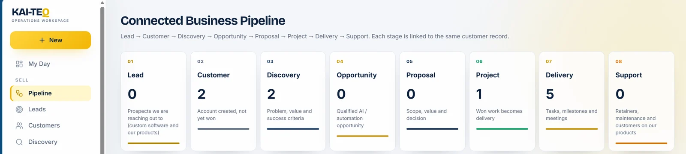
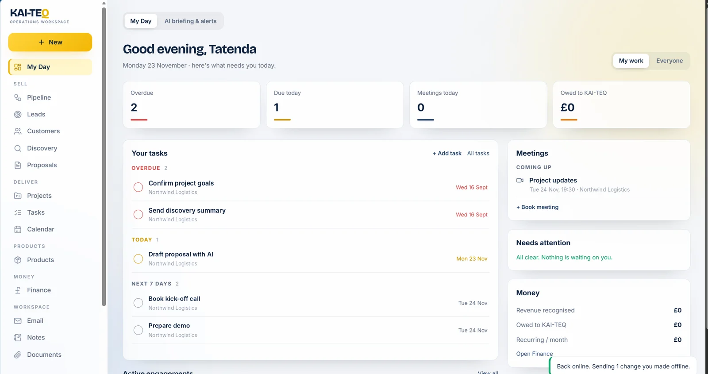
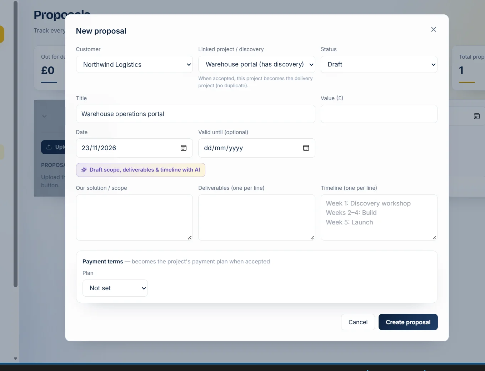
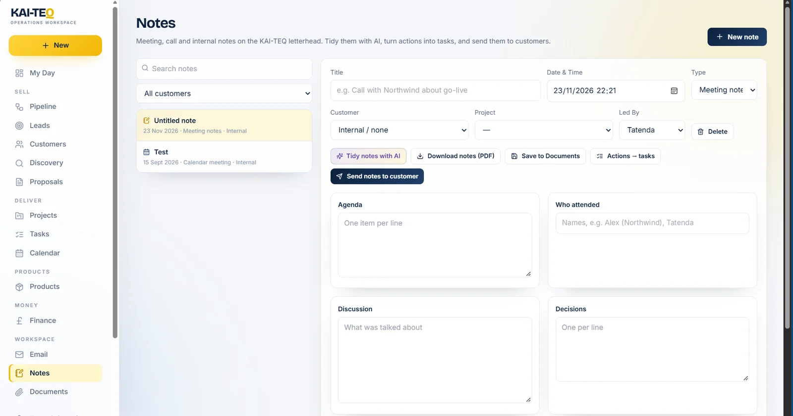
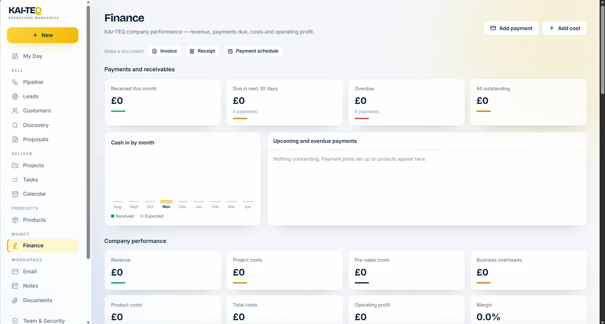

Case study · Business software · Applied AI
KAI-TEQ Operations Platform
Can one app run a small consultancy from first lead to final payment, with AI that helps but never acts on its own?
Built for KAI-TEQ, the small technology consultancy where I work part-time as an Solutions Consultant. Screens show demo data. The platform, its code and its design belong to KAI-TEQ and aren’t published.
01 / THE PROBLEM
Work spread across too many places
Customers, proposals, projects and money lived in spreadsheets, email and WhatsApp. Follow-ups were missed, the same details were typed again and again, and nobody had one view of what was owed or due.
02 / THE SOLUTION
One connected journey, from lead to payment

- Sell Leads, discovery and proposals, with payment terms that become the project’s payment plan
- Deliver Projects, tasks, meetings and live profit tracking
- Get paid Invoices, receipts and e-signing on branded PDFs
- Stay safe Sign-in, roles, app lock, offline sync and nightly backups

03 / AI IN CONTROL
AI drafts. A person decides.
The Claude assistant turns rough notes into structured meeting notes and drafts a proposal’s scope, deliverables and timeline from the discovery answers. Nothing is saved or sent until someone clicks.


- Human approval Every AI output is a draft to review
- Access Only signed-in team members can use it
- Cost control Usage logged and capped per person per day
- Security The API key stays on the server, never in the browser
04 / RESULT
What it changed

- One place for every customer, project and payment
- Proposals, invoices and signed documents produced from the same data
- What I learned: design AI around the decision a person makes, not around the model
Interested in something similar? Get in touch →